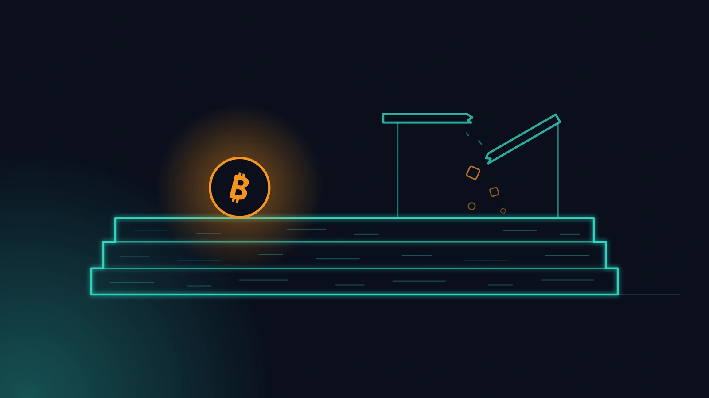

Il 6 settembre 2026 un gruppo di attaccanti — che in seguito si è definito white-hat, cioè hacker "etici" — ha portato via dalla Liquid Network circa 4.000 bitcoin, pari a circa 320 milioni di dollari. Ci sono volute poche ore, dal proprio computer, sfruttando un errore nel software con cui i nodi di Liquid verificano le transazioni. Buona parte dei fondi è stata poi restituita, ma secondo quanto riportato circa 47 milioni di dollari risultavano ancora sotto il controllo degli attaccanti al momento in cui scriviamo.
Liquid non è un progetto improvvisato. È costruito da Blockstream, uno dei team più rispettati del mondo Bitcoin; il codice è pubblico e nella rete ci sono exchange e custodi seri. Ed è proprio questo che rende interessante una domanda, da farsi con calma:
Se può rompersi perfino la sidechain di Bitcoin meglio costruita, su cosa dovrebbe appoggiarsi un piano di eredità, che deve funzionare per decenni?
Cosa si è rotto, spiegato semplice
Liquid è una sidechain: una rete separata, collegata a Bitcoin, con i suoi nodi, le sue regole e il suo software. Al suo interno circola una versione "rappresentata" del bitcoin, chiamata L-BTC, che dovrebbe essere sempre coperta da bitcoin veri tenuti in riserva.
Per andare più veloce, il software di Liquid si ricordava i risultati di alcuni controlli crittografici già fatti, così da non doverli rifare ogni volta. Il difetto stava proprio lì: dati nuovi e non validi potevano essere scambiati per dati vecchi, già verificati. Gli attaccanti ne hanno approfittato per creare L-BTC dal nulla — senza nessun bitcoin vero dietro — e scambiarli con bitcoin veri presi dalle riserve.
Vale la pena rileggerlo: Bitcoin non si è rotto. La rete Bitcoin ha fatto esattamente quello che doveva fare. Si è rotto uno strato costruito sopra Bitcoin, con il suo codice nuovo e quindi i suoi nuovi punti deboli.
Chi lavora in questo campo lo sa bene: ogni strato in più porta codice nuovo, e il codice nuovo porta errori nuovi. Non è una questione di "se", ma di "quando" — e di chi li scoprirà per primo. Nessuna critica a Blockstream, che ha reagito con trasparenza, ha corretto il problema in fretta e ha coordinato la restituzione dei fondi. Ma la lezione resta.
Perché per un'eredità conta ancora di più
Un piano di eredità non è un investimento da chiudere a fine settimana. Lo prepari oggi e gli chiedi di funzionare tra venti, trenta, quarant'anni: attraverso aggiornamenti del software, cicli di mercato e, soprattutto, la tua assenza. Quello su cui si appoggia deve reggere tutto questo.
Per chi fa trading, accettare un po' di rischio in cambio di funzioni nuove può avere senso. Per chi deve lasciare qualcosa alla propria famiglia, no.
Ecco perché consigliamo Bitcoin After Life
È proprio per questo motivo che, come servizio di eredità, consigliamo Bitcoin After Life (BAL Protocol). Il suo principio è semplice: usare soltanto strumenti che hanno già superato la prova del tempo sulla rete Bitcoin principale. In pratica:
Le regole di BAL Protocol
- Niente sidechain. Né Liquid né altre: sono reti separate, con regole e difetti propri — come ha appena dimostrato questo mese.
- Niente Layer 2. Lightning è ottimo per i pagamenti, non per custodire un'eredità.
- Niente script sperimentali. Nessuna soluzione ancora in discussione o provata solo sulla rete di test.
- Nessun wallet nuovo. Le transazioni si firmano con software collaudato, non con codice scritto l'anno scorso.
Quello che resta sono due pilastri: i più "noiosi" e i più collaudati che esistano.
- Electrum, il wallet che firma transazioni Bitcoin dal 2011 ed è tra i software più studiati e verificati al mondo. Il plugin BAL non firma mai niente da solo: prepara la transazione, te la mostra e lascia che sia Electrum — con le tue chiavi, anche su un hardware wallet — a firmarla.
- nLockTime, una regola presente in Bitcoin fin dalle origini: un campo che dice alla rete "non accettare questa transazione prima di questa data". La fa rispettare ogni nodo del pianeta, e nessun server, nessun erede impaziente e nessun errore intermedio può aggirarla.
Tutto qui. Tra i tuoi eredi e i tuoi bitcoin ci sono solo una firma fatta con Electrum e un'attesa garantita dalle regole di Bitcoin. Nient'altro.
Ed è per questo che abbiamo costruito un Will-Executor
C'è una domanda che ci fanno spesso: "E i server Will-Executor? Non sono loro l'anello debole?". La risposta è quasi deludente — ed è così di proposito.
Un Will-Executor non è un custode. Non ha le tue chiavi, non può modificare la transazione che riceve e non può deviare i fondi. Conserva soltanto una transazione già firmata e bloccata nel tempo, e la trasmette alla rete quando arriva la data. Somiglia più a una cassetta postale automatica che a una banca.
Prova a metterti nei panni di un attaccante:
- non può rubare niente, perché il Will-Executor non ha chiavi;
- non può modificare la transazione, perché è già firmata e cambiarla la renderebbe invalida;
- non può anticiparla, perché la rete Bitcoin la rifiuta prima della data stabilita;
- non può "comprare" un server per bloccarla, perché le copie sono su più server e basta che uno solo sia attivo per trasmetterla — e incassare la commissione.
Anche il compenso del Will-Executor è scritto direttamente nella transazione: una piccola commissione in bitcoin, pagata solo quando la transazione viene confermata sulla blockchain. Niente conferma, niente compenso.
Non c'è quasi niente da attaccare. Ed è esattamente il punto.
È per questo che abbiamo scelto di costruire il nostro server Will-Executor, raggiungibile su we.safe21.io. Con un sistema progettato così, un server in più non aggiunge rischi: aggiunge solo robustezza a tutta la rete. Te ne abbiamo parlato in dettaglio in SAFE21 diventa Will-Executor.
Cosa significa per te
Se stai pensando all'eredità dei tuoi bitcoin, la lezione di questo mese si riduce a quattro consigli:
- Tieni i fondi dell'eredità sulla rete Bitcoin principale. Non su una sidechain, non su canali Lightning, non su "ponti" o versioni rappresentate del bitcoin.
- Diffida di ciò che è nuovo e luccicante. Per chi fa trading il nuovo è una funzione in più; per un erede è un rischio in più. Preferisci il software che è stato attaccato pubblicamente più a lungo.
- Chiediti dove sta la fiducia. Se un piano ti dice "fidati del nostro server, del nostro custode, della nostra federazione", è lì che prima o poi cederà. Meglio qualcosa che venga imposto dalle regole di Bitcoin.
- Verifica. Il codice di BAL Protocol è open source: puoi leggerlo, o chiedere a un'intelligenza artificiale di leggerlo per te e dirti dove potrebbe rompersi. Oggi è un'abitudine alla portata di tutti.
Gli attaccanti di Liquid hanno lasciato sulla blockchain un promemoria da 320 milioni di dollari. Noi lo leggiamo come lo leggevamo dal primo giorno:
Non fidarti. Verifica. E solo dopo pianifica — sulla roccia.
Fonti:
- Articolo originale di Bitcoin After Life (in inglese): Liquid Network's $320M Lesson
- Analisi dell'incidente di Chainalysis (in inglese): chainalysis.com
- Perché Electrum e i time-lock (Bitcoin After Life, in inglese): bitcoin-after.life
- Il Will-Executor di SAFE21: we.safe21.io
I dati sull'incidente di Liquid del settembre 2026 riflettono quanto riportato pubblicamente al momento della scrittura: per gli aggiornamenti fai riferimento alle comunicazioni ufficiali di Blockstream. Questo articolo ha finalità informative e non costituisce consulenza legale, fiscale o di sicurezza. SAFE21 non prende mai in custodia i tuoi fondi.